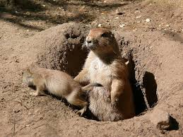
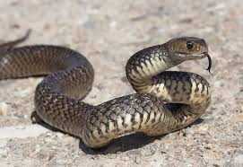
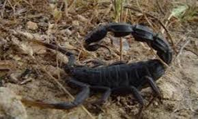

| Bu canlilar topragin altindaki besin ve mineralleri yiyerek vucutlarinda depolayarak yasar. Bu canlilar genellikle kolay urer ve yuvalari toprak altidir. Bu canlilar mineralleri uzun sure vucutlarinda tutar ve genelde suyu topraktan alir. Çiçeklerin koklerinde yasam daha coktur.Topragin icerisinde bircok canli yasamaktadir. Topragin altinda yasayan bazi canlilar buyuktur ve gozle gorebiliriz. Ancak, gozle gorulmeyecek kadar kucuk canlilarda vardir. Mesela, bir bahceden bir avuc toprak alsak onun icerisinde gozle goremedigimiz bircok canli olacaktir.1. Kostebekler, bocek ve solucanlarla beslenir.2. Karincalarda beslenme ture gore farklilik gosterir. Bazilari otcul iken bazilari ise etcildir. Omnivor (hem etcil hem otcul) karinca turleri de vardir.3. Yilanlar çogunlukla fare gibi memeli hayvanlar ile beslenir.4. Solucanlarin buyuk bir kismi toprak yutar ve bu topraktan ihtiyaci olan maddeleri sindirdikten sonra geri kalan kismi atarlar. (Atilan topragin daha verimli oldugu bilinmektedir.)5. Kirpiler ise cogunlukla salyangoz, bocek, solucan ve kurbagalar ile beslenir. Toprak altinda yasayan hayvanlar hangileridir, yer altinda yasayan hayvanlar nasil beslenir.Verimli topraklarin en onemli unsuru olan mikroorganizmalar, canli yasami icin onemli varliklardir. Toprakta bitkiler tarafindan depolanan karbon, organizmalar sayesinde karbondioksit olarak, tekrar atmosfere salinir.
|